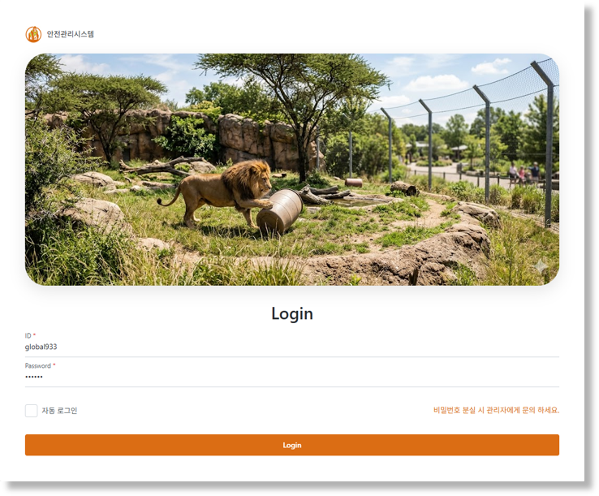
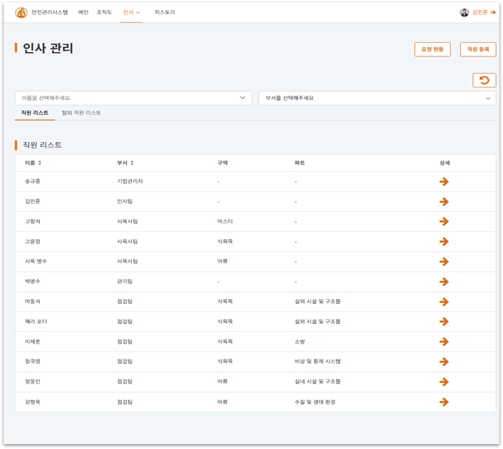
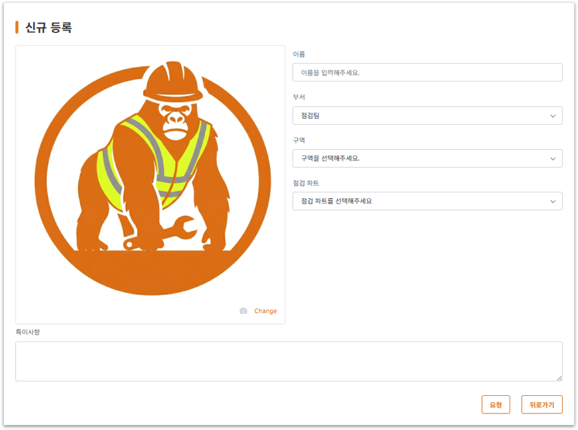
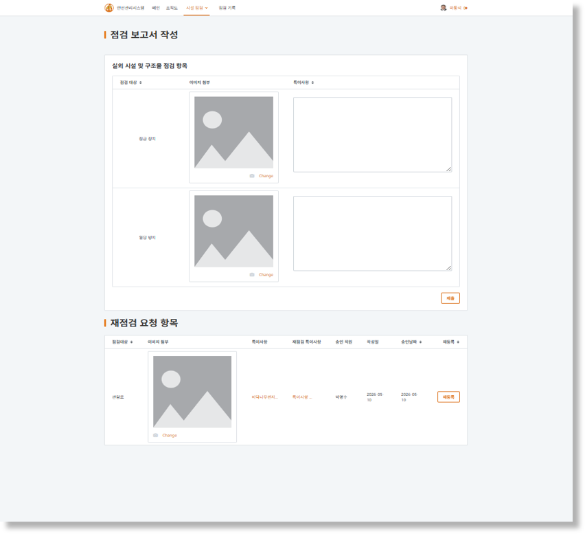
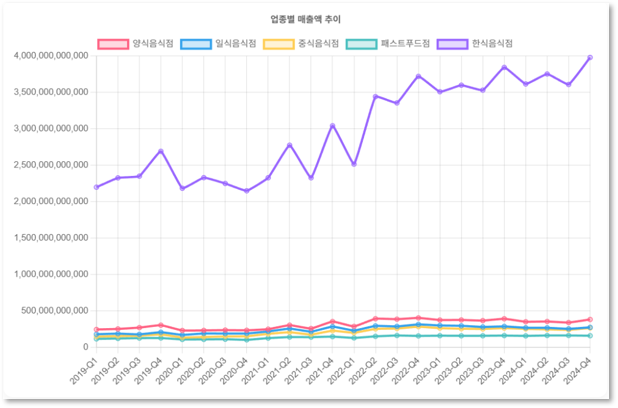
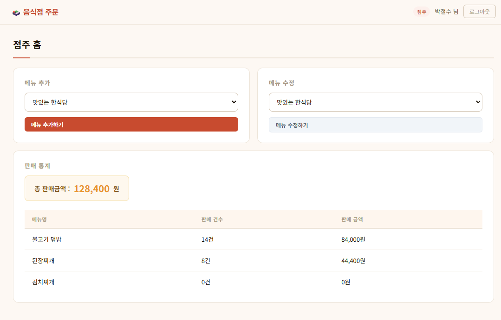
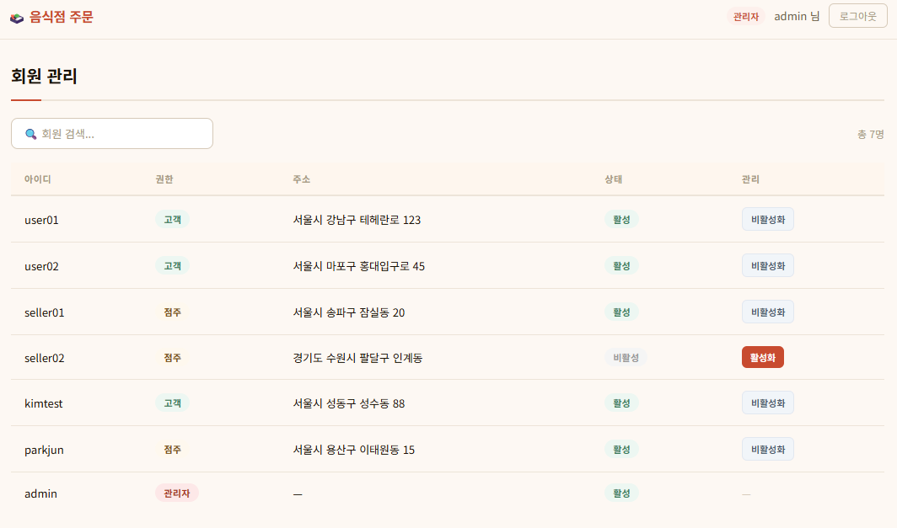

Projects
주요 프로젝트
01
동물원 스마트 안전 관리 시스템
LowCode 기반의 AI융합 스마트관리시스템 개발 심화 과정 팀 프로젝트.
OutSystems와 Brity RPA를 활용해 동물원 시설 점검·보고서 자동화 시스템을 구축.






- 오늘의 점검 목록 필터링 로직 및 상태 기반 UI 구현 (담당)
- 인사 관리 페이지 — 직원 CRUD, 등록·탈퇴 요청 승인/거절 흐름 설계 (담당)
- 시설 점검 보고서 제출 로직 — 이미지 URL 변환 및 예외 처리 설계 (담당)
- 조직도 차트, 비밀번호 변경, 실시간 점검 알림, 타이머 공용 모듈 개발 (담당)
- Brity RPA 프로세스 3종 설계 및 구현 — 암호화 파일 생성, 기업 계정 생성, AI 점검 보고서 자동 처리 (담당)
- Structure 기반 데이터 매핑으로 Out of Index 오류 근본 해결 (트러블슈팅)
OutSystems 11
Brity RPA
OpenAI API
Windows 10
📄 발표자료 다운로드
🏆 성적 우수 부문 표창
02
서울시 상권 분석·예측 [음식점]
서울시 공공 상권 데이터를 기반으로 음식점 업종별 매출 흐름을 분석·시각화한 웹 서비스.
팀장으로 프로젝트를 총괄하며 Spring Boot 전체 백엔드와 Flask 연동 컨트롤러를 담당.




- Spring Boot REST API 전체 구현 및 Flask 분석 서버 연동 구조 설계
- 서버 간 통신 REST API 기반 설계 — 데이터 처리 흐름 명확성 확보
- MySQL 테이블 설계 및 MyBatis 기반 CRUD 구현
- Chart.js를 활용한 데이터 시각화 화면 구성
Java
Spring Boot
Python / Flask
MySQL
MyBatis
Thymeleaf
03
음식점 주문 관리 시스템
고객 / 점주 / 관리자 역할 기반의 주문 관리 웹 애플리케이션.
Spring Security 인증 구조와 MyBatis 기반 데이터 연동을 단독 설계·구현.




- Spring Security 기반 역할별 인증·인가 처리 구현
- 주문 상태(생성·완료·취소) 흐름 관리 로직 설계
- 주문 정보·상세 데이터 분리 저장으로 데이터 일관성 확보
- 메뉴 CRUD 및 판매 통계 기능 구현
Java
Spring Boot
Spring Security
MySQL
MyBatis
Thymeleaf